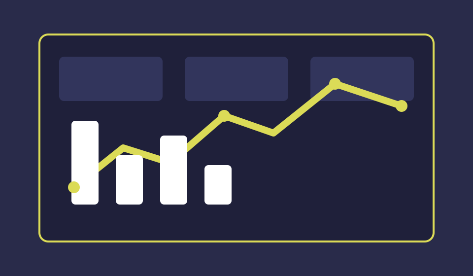
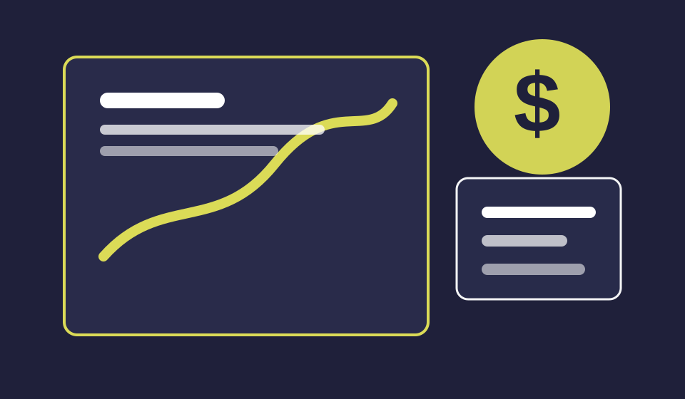
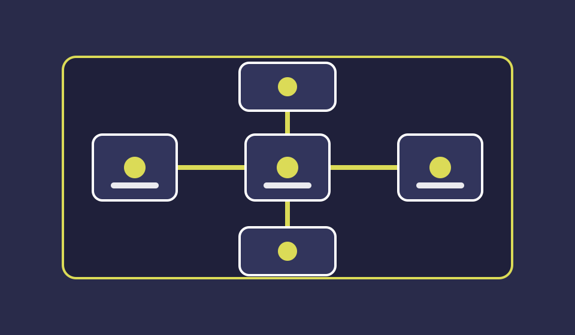

Check out some of my work!

Data analytics dashboard

Financial insights project

Technology workflow tool
Hey, I'm Ananda Feron, a passionate Data Scientist and Data Analyst from Queens, NY. I am dedicated to transforming raw data into actionable insights. With a background in Computer Science, I specialize in making data-driven decision-making accessible, intuitive, and impactful across various industries. I have a keen interest in machine learning, business intelligence, and how data can empower businesses to grow and succeed.
When I'm not working with data, you can find me exploring new technologies, sharing knowledge with others, and continuously learning to stay up-to-date in the ever-evolving world of data science and analytics.
Cyber Guardian Consulting Group LLC.
SUNY New Paltz IT Service Desk
Maximum Tours Inc.
Let's connect! Fill out the form below, and I'll get back to you as soon as possible.